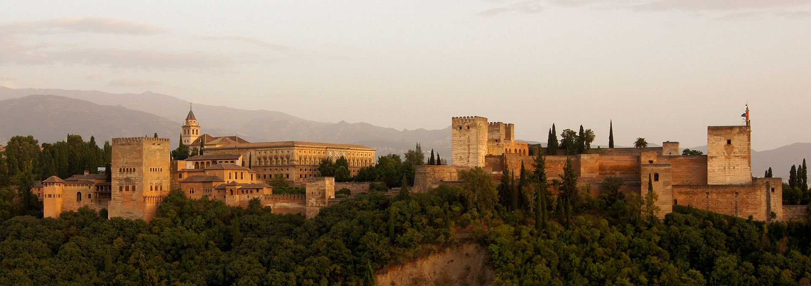
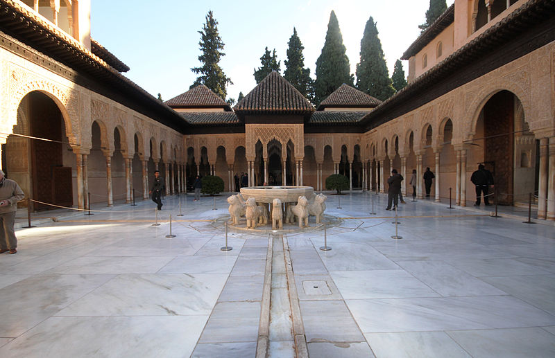
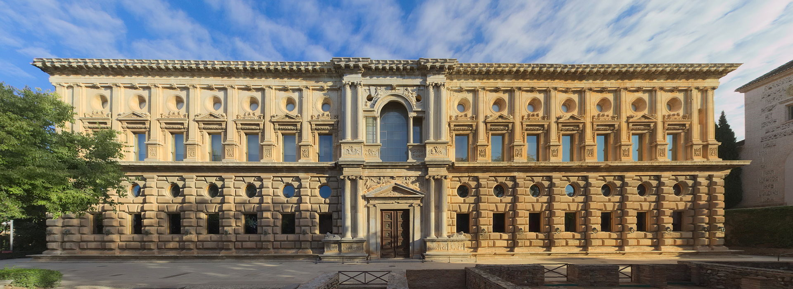

La Alhambra es un complejo monumental sobre una ciudad palatina andalusí situado en Granada, España. Consiste en un conjunto de antiguos palacios, jardines, convento, iglesia y fortaleza (alcazaba, del árabe: القصبة al-qaṣbah ‘ciudadela’) inicialmente concebido para alojar al emir y la corte del Reino nazarí, más tarde como residencia real Castellana y de sus representantes. Su singularidad artística radica en los interiores de los palacios nazaríes, cuya decoración está entre las cumbres del arte andalusí, así como en su localización y adaptación, generando un paisaje nuevo pero totalmente integrado con la naturaleza preexistente. Además, alberga un museo de arte andalusí, la pinacoteca principal de la ciudad así como un Parador nacional.
La Alhambra se levantó sobre la colina de la Sabika, uno de los puntos más elevados de la ciudad de Gharnata. Este emplazamiento buscaba una situación estratégica defensiva y a la vez transmitir un claro símbolo, donde la cima del poder es muy perceptible para el resto de la ciudad, una ubicación escogida para ser contemplada.
La colina de la Sabika ya era un espacio ocupado con anterioridad, al menos desde tiempo de los romanos y del año 666 datarían las primeras referencias escritas de un emplazamiento militar en la zona. Así se tiene constancia de los núcleos de Iliberis (Elvira), en el Albaicín y Alcazaba, Castilia, cerca del actual pueblo de Atarfe, y Garnata en la colina frente a la Alcazaba como un barrio de Iliberis en la comarca y en el 756 los núcleos de El Albaicín y la La Alhambra. La extensión de la colina permite albergar el complejo ocupando éste unos 740m de longitud y entre 180 m y 40 m de anchura.
A partir de la muerte de Alhakén II, tercer califa Omeya, en 976 la historia política del califato Omeya se convierte en un cúmulo de reveses. La reconquista cristiana pasa a ser el impulso dominante dentro de la península. En este contexto peninsular, la transformación de Gharnata de pequeña población en ciudad de cierta importancia ocurrió a principios del siglo XI, cuando la dinastía bereber de los Ziríes formó un principado semiindependiente. Bajo los tres gobernantes Habus, Badis y Abdallah (1025-1090) la ciudad aumentó en población.
Los edificios estaban concentrados en la colina de la Alcazaba y en su entorno inmediato. Para la formación de la Alhambra el acontecimiento más importante es la construcción por el visir Yusuf ibn Nagrela de una fortaleza-palacio en la colina de la Sabika. Un poema de Ibn Gabirol parece indicar que los leones de la fuente de los Leones se hallaban originariamente en el palacio de este visir judío. Puede que haya habido otras construcciones puramente militares en la colina de la Alhambra durante el período zirí, pero es difícil distinguirlas con precisión.
El año 1238 señala un segundo momento crucial. Muhammad ibn Nasr tomó la ciudad. La paradoja de la Andalucía nazarí consiste en el hecho de que un poder político y militar decadente, moribundo en realidad, coincida con una cultura original y sorprendentemente rica. La Alhambra se creó en un mundo políticamente inestable y económicamente próspero. Así, Muhammad acepta una relación de vasallaje con la corona de Castilla, y así entra en por la Puerta de Elvira para ocupar el Palacio del Gallo del Viento (la antigua Alhambra), Mohamed-Ben-Nazar (o Nasr), llamado Al-Hamar el Rojo por el color de su barba.
Ben-Al-Hamar construyó el primer núcleo del palacio, fortificándolo posteriormente su hijo Mohamed II. Con toda probabilidad las murallas exteriores y el acueducto se completaron para el final del siglo XIII. Los jardines y pabellones del Generalife datan al parecer del reinado de Isma'il (1314-1325). Pero los restos más importantes de la Alhambra (el complejo del patio de los Arrayanes y el de los Leones) pertenecen a la época de Yusuf I (1333-1354) y Muhammed V, este estilo granadino es la culminación del arte árabe andaluz. Tras tres siglos de actividad, quedan bien diferenciados los tres sectores en la Alhambra: la alcazaba, el entramado urbano y los palacios.
En 1492, finaliza la conquista de Granada por los Reyes Católicos. Hernando del Pulgar, cronista de la época, nos cuenta: "El conde de Tendilla y el Comendador Mayor de León, Gutierre de Cárdenas, recibieron de Fernando el Católico las llaves de Granada, entraron en la Alhambra y encima de la Torre de Comares alzaron la cruz y la bandera". La Alhambra pasa así a ser ciudadela y palacio real de los reyes cristianos y el complejo continúa su desarrollo, se añade el convento de San Francisco en 1494, el palacio de Carlos V en 1527 o la iglesia de Santa María de la Encarnación de la Alhambra en 1581.
De planta trapezoidal algo irregular, la alcazaba es el recinto situado en la parte más occidental del cerro de Sabika, constituía la zona militar, centro de la defensa y vigilancia del recinto y con ello fue la parte de construcción más antigua de la Alhambra. Las primeras edificaciones hispano-árabes realizadas se corresponden con la época califal, en el siglo XI. Así como de la dinastía zirí, ampliándose las mismas al convertirse Granada en capital de uno de los reinos de Taifas. Con Muhammad I, primer rey nazarí de Granada, se reconstruyó y amplió esta fortaleza, se reforzaron sus muros y se levantaron las principales torres. Su sucesor Muhammad II terminó las obras de reconstrucción de la alcazaba. Con anterioridad a la edificación de los palacios nazaries, esta área compartía también una función de alojamiento real.
La ciudad palatina de la Alhambra ha albergado un sinfín de palacios, palacetes, grandes casa y torres-palacios, que se han ido sustituyendo de acuerdo a los preceptos islámicos de no construir nada que se perpetúe en el tiempo y a la tradición de que cada sultán se hiciese su palacio para demostrar su poder personal. El Mexuar, el Palacio de Comares y el Palacio de los Leones fueron escogidos por los Reyes Católicos para habitarlos en sus estancias en Granada, lo que garantizo su conservación, frente a otros maltratados, abandonados o destruidos en su mayoría durante la breve ocupación militar francesa
Si las habitaciones de Daraxa y el conjunto del Patio de los Leones iban a ser la nueva residencia privada de Carlos V, un nuevo palacio sería necesario para atender las necesidades funcionales y representativas de la corte.
La iniciativa para la construcción del palacio de Carlos V se inició en 1526, con motivo de la boda del emperador en Sevilla y su posterior traslado a Granada durante ese verano. El proyecto se encargó al arquitecto Pedro Machuca y las obras se iniciaron en 1533, tras algunos años de desacuerdos sobre su diseño y ubicación. La financiación de la construcción se realizó con exacciones impuestas a los moriscos, a cambio de conservar algunas de sus costumbres. Posteriormente, también se utilizaron otros recursos procedentes de la Casa de Contratación de Sevilla y los azúcares granadinos.
Presenta planta cuadrada con patio interior circular y fue diseñado por Pedro Machuca. Sorprende por el año de su inicio (1533), época muy temprana para sus características, que lo encuadran dentro del manierismo: columnas dóricas en el primer piso, jónicas en el segundo, y friso con cabezas de toro (bucráneos) de tradición grecorromana. En algunos aspectos, repite o anticipa ciertas soluciones arquitectónicas del manierismo en Italia, lo que se explica por la estancia de Machuca en dicho país y por su habilidad para desarrollar con inventiva propia ciertos rasgos del incipiente estilo manierista.
Su fachada es totalmente renacentista. El primer cuerpo es de estilo toscano con almohadillado. El segundo posee elementos decorativos propios del barroco. Sobre la puerta principal, se encuentran dos estatuas aladas de mujer reclinadas en el frontón. Arriba, tres medallones enmarcados en mármol verde resaltan contra la piedra. En los laterales, se representan escenas de la mitología griega, concretamente dos de Los doce trabajos de Hércules. Los anillos de hierro de la parte baja son puramente decorativos, siguiendo la moda vigente en Florencia y Siena en el momento de la construcción.
El Generalife, el Yannat al-arif en tiempos nazaríes, es la villa con jardines utilizada por la realeza de Granada como lugar de retiro y descanso. La parte más importante está constituida por sus jardines. El Generalife era una villa rústica o almunia real rodeada de huertas y jardines ornamentales que de forma integral servían tanto para la manutención como para el asueto de la familia real nazarí. Fue declarado Patrimonio de la Humanidad por la Unesco. Es de estilo hispano-árabe nazarí y está situado en el lado septentrional de la Alhambra. Cerca del Generalife, y relacionados con él, se encuentran diversas construcciones de época nazarí, como Los Albercones, los restos del palacio de Dar al-Arusa, la Alberca Rota y la Silla del Moro.
| Precio | |
|---|---|
| Visita Diurna | |
| General | 14.85€ |
| Mayores 65 años y Jóvenes | 9.54€ |
| Discapacitados y Niños (10-15 años) | 8.48€ |
| Menores de 12 años | Gratis |
| Visita Nocturna | |
| Palacios Nazaríes Adultos | 8.48€ |
| Palacios Nazaríes Jóvenes | 6.36€ |
| Palacios Nazaríes Menores de 12 años | Gratis |
| Jardines y Generalife Adultos | 5.30€ |
| Jardines y Generalife Jóvenes | 4.24€ |
| Jardines y Generalife Niños Menores de 12 años | Gratis |
| Horario | ||
|---|---|---|
| Visita Diurna | Lunes a Domingo | 08:30-18:00 |
| Visita Nocturna | Lunes a Domingo | 20:00-21:30 |
| Visita Exclusiva | Lunes a Domingo | 18:00-20:00 |